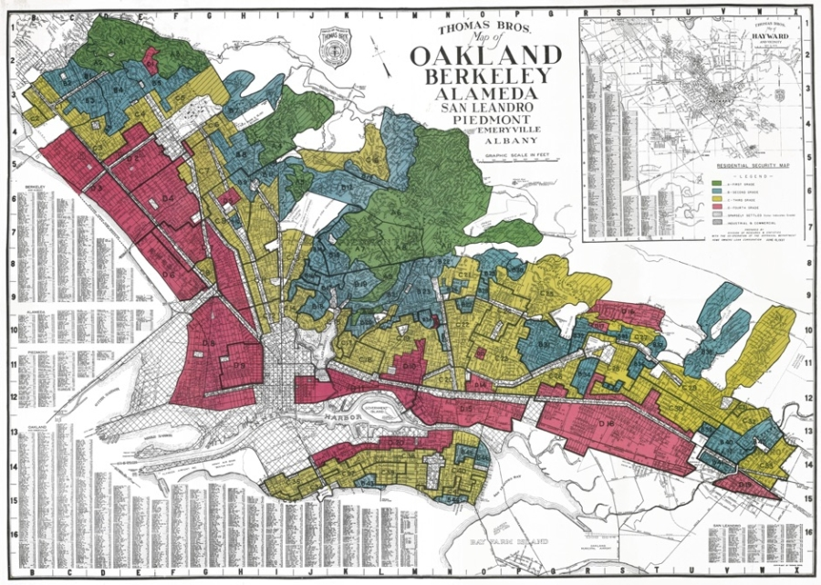

Redling: Segregation in Berkeley
This article published in Berkeleyside details the racially exclusionary housing policies of the 20th century and the way an affordable housing crisis was manufactured.

Berkeley Zoning
This article published in Berkeleyside details the racially exclusionary origins of Berkeley’s zoning code and its effects on the affordable housing crisis.